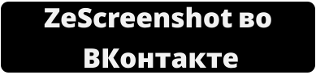

ZeScreenshot
- это программа для скриншотов. Быстрых скриншотов. Качественных скриншотов. С широким функционалом. Полностью бесплатна. Разработана
ZzEdovec
.
Загрузите уже сейчас для операционной системы Microsoft Windows -
